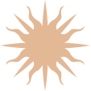

SOBRE MÍ
Catalina Santero, desde el 2019 me dedico a la experimentación con botánicos para mi obra como tatuadora, trabajando con luces y sombras. Mis tatuajes además de analógicos, son experimentales, tienen al cuerpo como soporte de piezas que van más allá del tatuaje en sí mismo.
El tatuaje como un medio que me permite conversar sobre la vida en un territorio y el cuerpo que lo habita.
Soy tatuadora independiente desde 2019, estudiante del último año de la carrera de Arquitectura de la FADU, UBA; profesora de Representación Arquitectónica en la Universidad de Buenos Aires, y parte del colectivo Inundación Sonoro-Lumínica.
